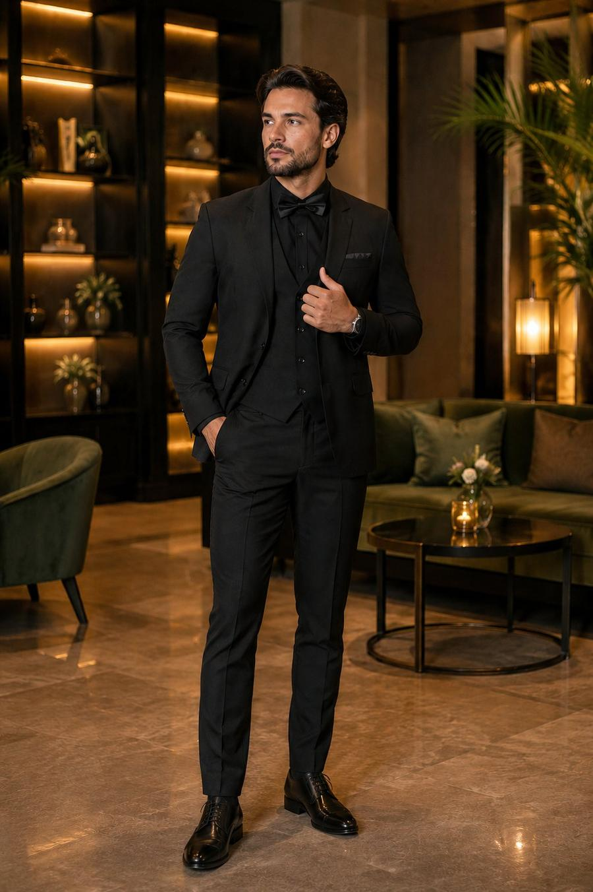
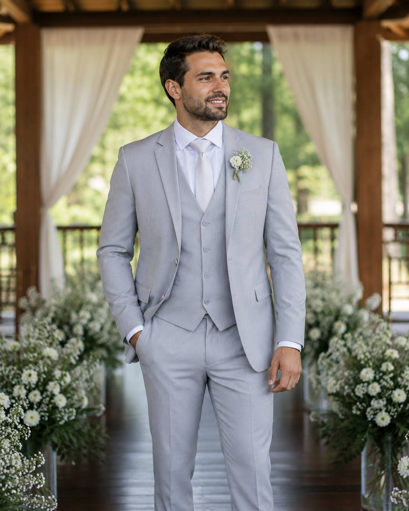
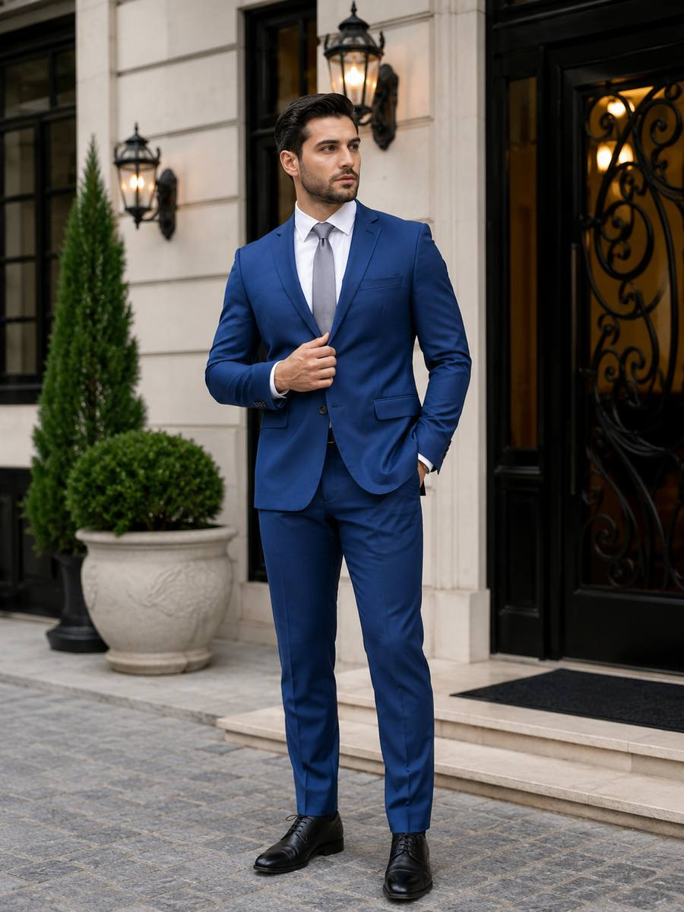
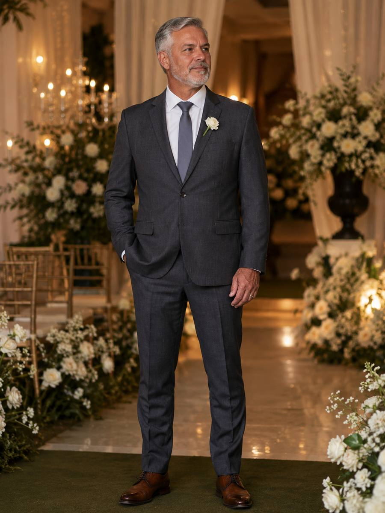
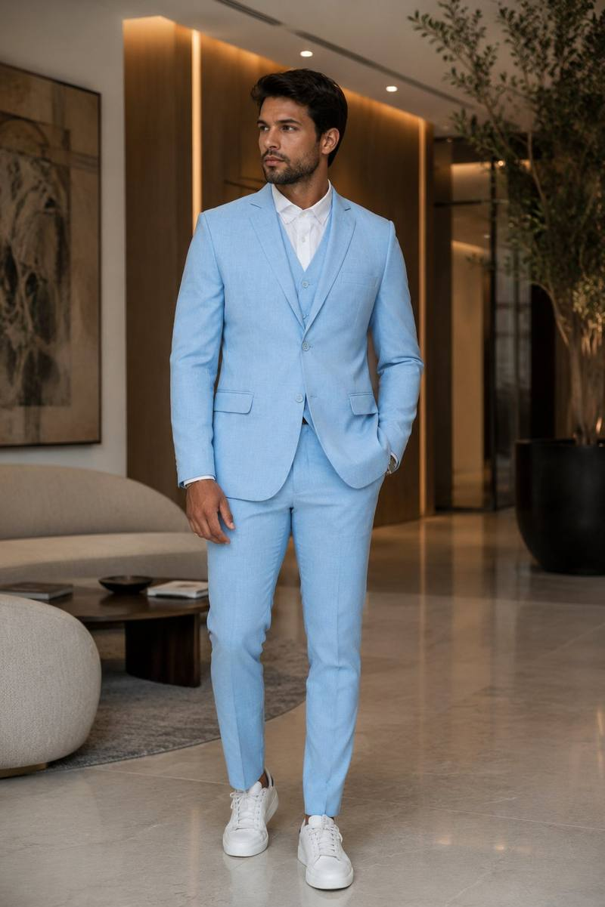
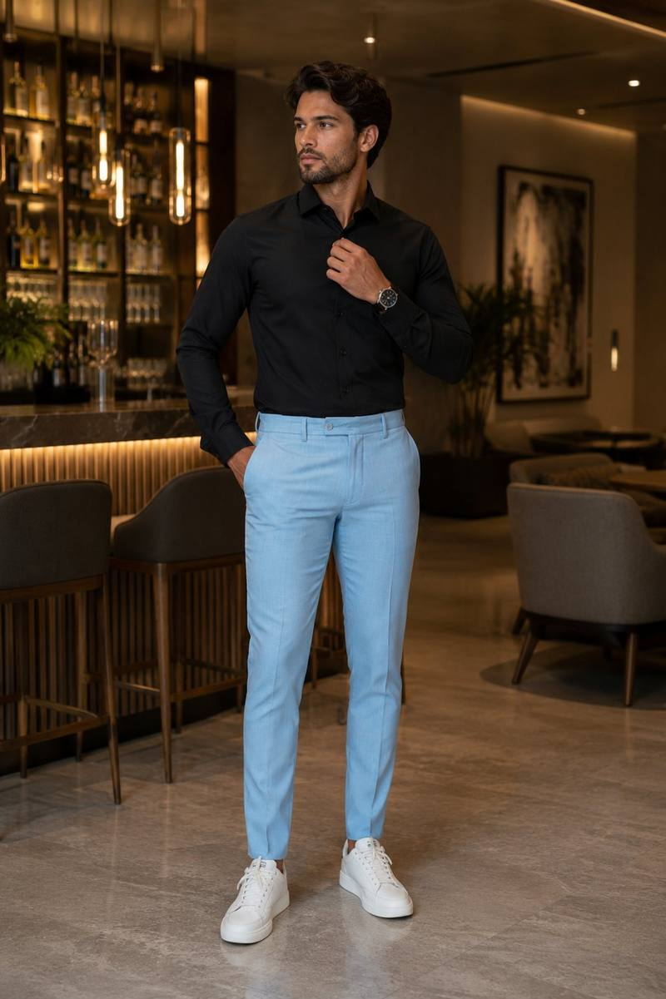

Início / Ternos e trajes de gala
Ternos slim e trajes de gala para noivos, padrinhos, formaturas e eventos formais, com alfaiataria sob medida inclusa e grade de numeração completa.
Agendar provaUm bom terno muda a postura de quem veste, e por isso a escolha merece cuidado. Na Emanuelle Caetano, em Montes Claros, você aluga ternos e trajes de gala de qualidade, com ajuste ao corpo e entrega pronta. É uma solução prática para casamentos, formaturas e eventos formais, sem o custo de comprar uma peça que será usada poucas vezes.
O acervo trabalha com foco em cortes slim modernos, em cores como preto, cinza, azul royal, azul claro, azul-marinho e bege, e com uma grade de numeração completa, incluindo ternos plus size. Assim, noivo, padrinhos, pais dos noivos e convidados encontram o caimento certo.
Alguns dos ternos e trajes sociais disponíveis. Confirme a disponibilidade para a sua data pelo WhatsApp.






O terno do noivo costuma ser o destaque do altar. Cortes slim em cinza claro, azul-marinho, azul royal ou preto são clássicos e combinam com cerimônias de dia ou de noite. Vale definir antes a paleta do casamento, para que o terno converse com a decoração e com os trajes dos padrinhos.
Os padrinhos geralmente usam trajes padronizados. Na Emanuelle Caetano, a escolha pode seguir a paleta dos noivos, em tons como azul-marinho, bege ou cinza, em ternos slim com ajuste individual para cada um. Veja como funciona o pacote de padrinhos.
Para a formatura, o terno preto ou em tons escuros é a escolha mais segura e fotografa bem em qualquer cerimônia. O atelier ajusta barra, cintura e mangas para que o caimento fique impecável do início ao fim da festa.
Para jantares, eventos corporativos e festas formais, os trajes sociais e de gala completam o visual com elegância. Há também sapatos sociais masculinos modernos para fechar o traje.
O acervo conta com ternos plus size, para que ninguém precise abrir mão do caimento e do conforto. Informe sua numeração ao agendar, e a equipe separa as opções antes da sua visita.
Os ternos são entregues lavados, higienizados e passados, com ajustes de barra, cintura e mangas já inclusos no valor da locação. Você não paga costura à parte e não precisa se preocupar com a preparação da peça. Se você também precisa de vestido para a família, veja a página de vestidos de festa.
O atendimento é com hora marcada, de segunda a sexta, das 9h às 12h e das 14h às 18h30, e aos sábados, das 9h às 12h30, na Rua Menino Jesus de Praga, 40A, bairro Renascença, em Montes Claros. Chame a equipe pelo WhatsApp (38) 99176-8384, informe a data do evento, o tipo de traje e a sua numeração, e combine o melhor horário para a prova. Para casamentos, agende com antecedência, principalmente se forem vários padrinhos.
Na Emanuelle Caetano, no bairro Renascença, você encontra ternos para noivos, padrinhos e pais dos noivos, em cortes slim e em várias cores. O atendimento é com hora marcada, pelo WhatsApp (38) 99176-8384.
Sim. O acervo conta com ternos plus size e uma grade de numeração ampla, para que todos os padrinhos e convidados fiquem bem vestidos e confortáveis.
Sim. A alfaiataria sob medida, com ajuste de barra, cintura e mangas, está incluída no valor da locação. Os ternos são entregues lavados, passados e prontos para o evento.
Sim. Além dos ternos e trajes sociais, há sapatos sociais masculinos modernos para completar o traje.